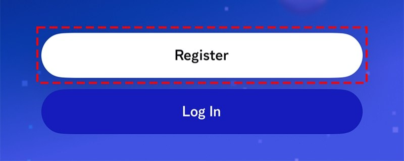
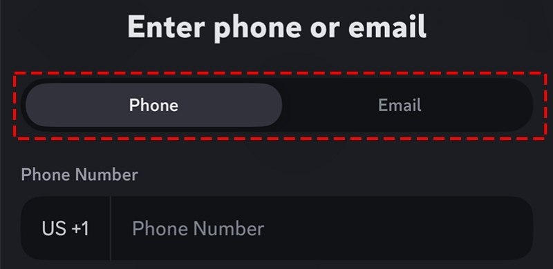
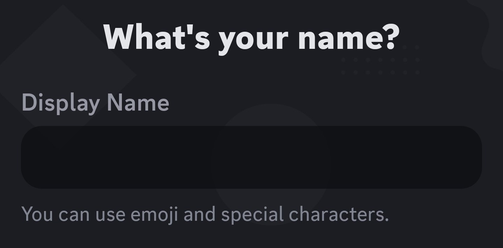
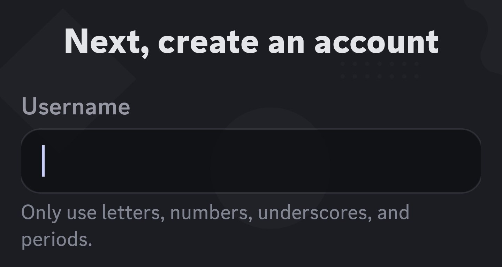
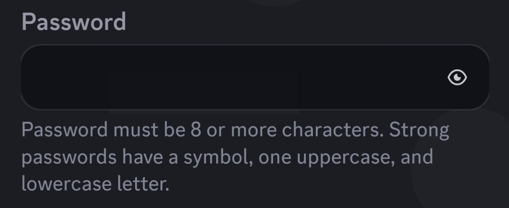
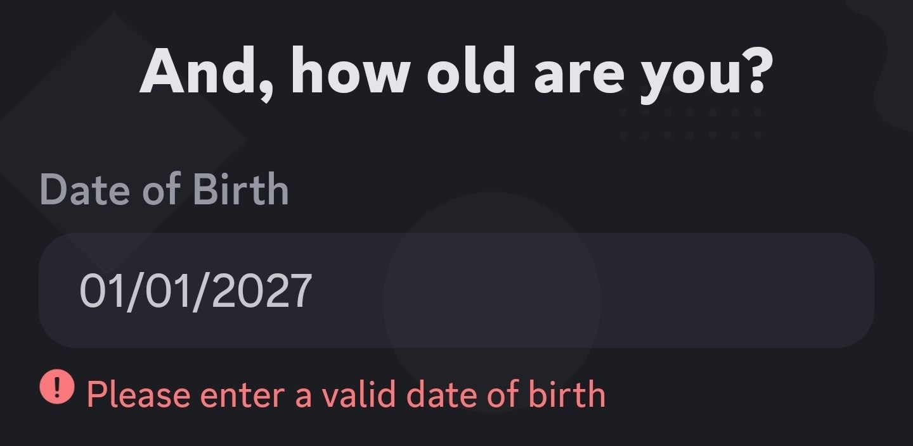
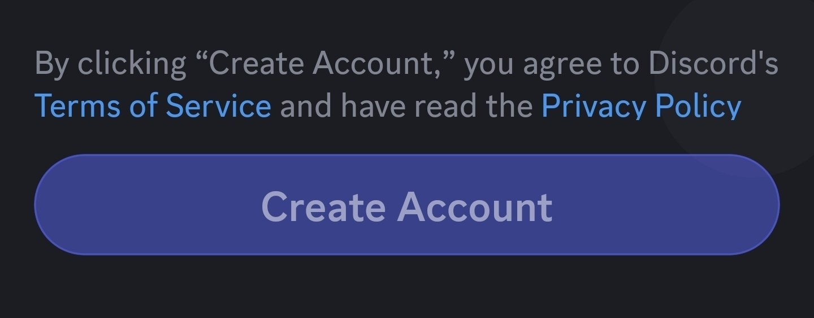

بِينَاتْنَا منصة أكاديمية مستقلة، أُنشئت خصيصًا لطلبة التعليم عن بُعد في الجامعة المفتوحة بدولة ليبيا، الحاليين منهم والخريجين، بجميع الفروع والتخصصات. المنصة غير تابعة للجامعة المفتوحة.
أسّسها طلاب من داخل الجامعة، لديهم خبرة عملية من مشاريع سابقة ومعرفة مباشرة بتخصص الإدارة. فالتعليم عن بُعد يمنح مرونة، لكنه غالبًا يفتقر إلى المحاضرات المباشرة والشرح الموجَّه. ولهذا توفّر المنصة طبقة تعليمية تربط الطلبة الحاليين بخريجين وطلبة متقدمين مؤهلين، ضمن بيئة منظمة يستفيد فيها الطرفان.
رؤيتنا
ليست بِينَاتْنَا مجرد منصة، بل تصوّر مختلف للتعليم الجامعي. نهدف إلى سدّ فجوة الشرح الموجَّه وضعف التفاعل التي يواجهها طلبة التعليم عن بُعد، عبر بيئة قائمة على التعاون وتبادل المعرفة بين الطلبة أنفسهم.
التعلّم عندنا ليس فرديًا ولا في اتجاه واحد، بل ينشأ من شبكة علاقات أكاديمية يكمّل فيها كل فرد دور الآخر، ليحصل الطالب على دعم حقيقي، وشرح أوضح، وتجربة تعليمية أكثر تفاعلًا واستمرارية.
الاسم والهوية
اسم «بِينَاتْنَا» مأخوذ من معنى «بين»: المساحة المشتركة التي تجمع الأفراد. وهو يعكس فكرة المنصة: معرفة تُتداول بين الطلبة أنفسهم، يتعلم فيها الطلاب من بعضهم، ويشرح المؤهلون لزملائهم.
والشعار شبكة مترابطة من النقاط والمسارات تمثّل الطلبة داخل منظومة تعليمية واحدة. الترابط يرمز إلى تبادل المعرفة والتعاون المستمر، والمركز يرمز إلى الطالب باعتباره محور العملية التعليمية، والشكل العام يوحي بالنمو ورحلة التعلّم التي تبدأ من الفرد وتمتد عبر المجتمع.
ما الذي يميّزنا
- شرح مُعدّ وفق منهجك الجامعي الفعلي
- متابعة الحضور لضمان الاستمرارية
- اختيار دقيق للمدربين بعد اختبارهم كمتطوعين أولًا
- مدربون من الخريجين أو الطلبة المتفوقين الذين سبق لهم اجتياز المواد التي يقدّمونها
- إدارة منظمة داخل نظام موحّد بدلًا من المجموعات العشوائية وغير المنظمة (مثل مجموعات ماسنجر وواتساب وتيليجرام)
- مسار منظم للتدرّج من طالب متعلّم، إلى محاضر متطوع، إلى مدرّب معتمد داخل المنصة
- فرص للمدربين المميزين للانتقال إلى أدوار تنظيمية وتسويقية مستقبلًا
هذه منظومة أكاديمية متكاملة وليست دروسًا خصوصية عشوائية، وتتيح للأعضاء الملتزمين التطور من مشاركين إلى مساهمين موثوقين.
لمن هذه المنصة؟
- طلبة التعليم عن بُعد الباحثون عن التوجيه والانضباط
- من يفضّلون النظام على العشوائية
- من يسعون إلى تحسين مستواهم الأكاديمي
- الخريجون والطلبة المتفوقون الراغبون في التدريس
إذا كنت طالبًا أو خريجًا في الجامعة المفتوحة بليبيا، فقد صُمّمت هذه المساحة لأجلك.
كيف تستفيد أكاديميًا؟
- دروس متوافقة مباشرة مع مقرراتك الجامعية
- دورات منظمة ضمن مجموعات تعزّز التفاعل
- مواعيد مرنة تناسب طبيعة التعليم عن بُعد
- شروحات واضحة تعزّز الفهم والاستيعاب
- حصص فردية مكثفة لدعم مركّز يضمن التركيز عليك
- محاضرات أونلاين بالكامل يمكنك حضورها من أي مكان
- تسجيل ودفع إلكتروني بالكامل (أكثر من 10 طرق دفع) عبر هاتفك داخل السيرفر
يساعدك ذلك على الدراسة بذكاء، والاستمرار بانتظام، وتحقيق أداء أفضل في الامتحانات النهائية.
إذا وصلت إلينا عبر إعلان، أو كانت هذه أول مرة تستخدم فيها دسكورد، ابدأ من غرفة الدعم والتوجيه على تيليجرام، وأرسل لنا:
- الدرجة العلمية (بكالوريوس / ماجستير)
- التخصص في الجامعة المفتوحة
- المواد المسجّلة لهذا الفصل الدراسي
وسنرد عليك مباشرة لمساعدتك في:
- معرفة الدورات المتاحة لموادك الدراسية
- معرفة المجتمعات المتاحة لك في دسكورد
- إنشاء حساب على دسكورد إن لم يكن لديك حساب
- الانضمام إلى السيرفر المركزي للمنصة بسهولة
بعد انضمامك إلى السيرفر
اختر المسار الذي يناسبك:
- تبحث عن الدورات التفاعلية الجماعية أو الدورات الفردية المكثفة؟ توجّه إلى قناة الدورات
- ترغب في المساهمة في تطوير مجتمعات بِينَاتْنَا، تعليميًا أو تنظيميًا أو بمساعدة زملائك؟ توجّه إلى قناة المبادرة التطوعية
-
حمّل تطبيق دسكورد الرسمي من متجر التطبيقات الخاص بجهازك:

- أجهزة أندرويد: من Google Play
- أجهزة آيفون وآيباد: من App Store
- الكمبيوتر: من الموقع الرسمي عبر المتصفح
-
افتح التطبيق واضغط Register (تسجيل) لبدء إنشاء حسابك.

-
أدخل بريدك الإلكتروني أو رقم هاتفك.

-
أدخل اسمك الحقيقي. يمكنك استخدام الرموز التعبيرية والأحرف الخاصة.

-
اختر اسم مستخدم (Username) يتكوّن من حروف إنجليزية وأرقام وشرطات سفلية ونقاط فقط.

-
أنشئ كلمة مرور قوية وتذكّرها (8 أحرف أو أكثر).

-
اختر تاريخ ميلادك، وتأكد من أنه تاريخ صحيح.

-
اضغط Create Account (إنشاء حساب)

-
أكّد بريدك الإلكتروني عبر الرسالة التي ستصلك، وفيها رابط أو رمز للتحقق، ثم سجّل الدخول وابدأ باستخدام حسابك بشكل طبيعي.
-
أضف صورة لملفك الشخصي لتتميّز.
كيف تعمل الدورات؟
-
انضم إلى السيرفر، وستحصل تلقائيًا على صلاحية الاطلاع على معلومات المنصة وخدماتها.
-
اختر دورة من الدورات المعلنة، وافتح تذكرة في غرفة حجز الجلسات التجريبية.
-
احضر الجلسة التجريبية لتتعرف على أسلوب المدرب ومحتوى الدورة. حضورها لا يُعد تسجيلًا ولا يضمن لك مقعدًا.
-
إذا قررت الالتحاق، أبلغ المدرب ليتم فتح قنوات الدفع لك، ثم أكمل التسجيل والدفع حسب إرشادات الدفع.
-
بعد تأكيد الدفع تحصل على صلاحية الدورة: قنواتها وغرفها الصوتية ومحتواها التعليمي.
أهم السياسات
- القنوات الرسمية تتم جميع إجراءات الحجز والتسجيل والدفع والاستفسار عبر القنوات ونظام التذاكر داخل السيرفر فقط، وليس عبر الرسائل الخاصة أو مجموعات خارجية.
- الإشعارات يُرجى تفعيل إشعارات السيرفر بالكامل، فتفويت الإشعارات مسؤولية العضو.
- الحضور والسلوك الالتزام بمواعيد الجلسات (مع فترة انتظار 15 دقيقة)، وإبقاء الميكروفون مغلقًا عند عدم التحدث، والالتزام بموضوع المادة.
- المحتوى مواد الدورات للتعلم الشخصي فقط، ولا يجوز تسجيلها أو مشاركتها أو بيعها. واسم المنصة وشعارها ومحتواها ملك للمنصة.
- الدفع والاسترداد الدفع مسبق وغير قابل للاسترداد إلا في حالات محددة، مثل تعذّر إقامة جلسات من جهة المدرب أو إتمام الدورة بعدد جلسات أقل من المدفوع. والجلسات الفائتة بسبب الطالب لا تُعوَّض ولا تُسترد إلا باستثناء تعتمده الإدارة.
- التحديثات تحتفظ الإدارة بحق تحديث السياسات، وتُعلن التعديلات في قناة الإعلانات.
مبادرات تعليمية تفاعلية ضمن منصة بِينَاتْنَا، تهدف إلى بناء منظومة طلابية مترابطة تغطي مجموعة من التخصصات والأقسام، عبر مجتمعات متفرعة من السيرفر المركزي للمنصة على دسكورد.
توفّر المبادرة بيئة داعمة تساعد الطلاب على:
- المذاكرة الجماعية
- تبادل المعرفة والملخصات والكتب وأرشيف أسئلة الامتحانات السابقة
- حضور الشروحات والمحاضرات التطوعية
- المشاركة في أنشطة تعليمية متنوعة عبر غرف نصية وصوتية ومرئية، مدعومة بأدوات تفاعلية مثل السبورة الإلكترونية والاختبارات القصيرة
المبادرة مستقلة بالكامل ولا تتبع الجامعة المفتوحة، وهي جهد طلابي قائم على التعاون والمشاركة لدعم المسيرة الأكاديمية لجميع أعضائها. وتقتصر العضوية على طلاب الجامعة المفتوحة فقط، ويتم الوصول إليها بعد التحقق من هوية الطالب.
كيف تنضم إلى المبادرة؟
-
ادخل سيرفر بِينَاتْنَا عبر رابط الانضمام.
-
افتح تذكرة داخل السيرفر في غرفة المبادرة، واختر نوع الطلب المناسب: الانضمام، أو استرجاع العضوية، أو استبدال الحساب.
-
عبّئ النموذج المبسط، وقدّم إثباتًا (صورة من بطاقة الطالب أو لقطة شاشة من بوابة الطالب) يوضح بجلاء: الاسم كاملًا، والتخصص، ورقم القيد، والفرع.
يُرسل إثبات الهوية داخل غرفة التذكرة الخاصة في السيرفر فقط، ولا يُنشر علنًا.
يُرجى الالتزام بحساب دسكورد واحد فقط لكل طالب. وتُزال الحسابات غير النشطة تلقائيًا مع الوقت، للحفاظ على بيئة طلابية نشطة ومتفاعلة.
فرص التطوع
تتيح المبادرة الانضمام إلى فريق «رواد النهضة»، وهو فريق طلابي يساهم في تشغيل المبادرة وتطويرها من خلال عدة أدوار، منها:
- مشرف الشات استقبال الأعضاء، وتنظيم المحادثات، والإشراف على الالتزام بالقواعد، وتوجيه المستخدمين تقنيًا
- وصيّ المراجع إدارة كتب ومراجع المواد، وتحديثها باستمرار، والتأكد من دقتها وتنظيمها
- منظّم الملخصات مراجعة جودة الملخصات وتنسيقها وترتيبها، وتوثيق أصحابها
- منسّق الأرشيف تجميع أوراق الامتحانات وتنظيمها وترتيبها زمنيًا، وضمان جودتها وعدم تكرارها
- مندوب العلاقات دعوة أعضاء جدد، وبناء الشراكات، وتعزيز التفاعل والانتماء داخل المجتمع
- مدرّب الطلاب تخطيط المحاضرات وتقديمها، ومتابعة الطلاب، والإجابة على استفساراتهم مع توفير موارد داعمة
- مستضيف الصوتيات تنظيم الجلسات الصوتية واستضافتها، ومشاركة المحتوى، ومتابعة تفاعل الحضور
- مرشد أكاديمي توجيه الطلاب أكاديميًا، ومساعدتهم في التخطيط الدراسي، والإجابة على استفساراتهم
كل دور يساهم بشكل مباشر في بناء بيئة تعليمية متكاملة قائمة على التعاون.
فوائد التطوع
هذا أكثر من مجرد عمل تطوعي، إنه استثمار حقيقي في نفسك ومسارك الأكاديمي والمهني:
- تطوّر مهاراتك العملية وتعزّز فرصك المهنية
- يكون لك تأثير مباشر في تحسين المستوى الأكاديمي للمجتمع
- تكتسب خبرات حقيقية تضيفها إلى سيرتك الذاتية بفخر
- تنضم إلى بيئة داعمة تدفعك للتقدّم وتمنحك شعورًا بالانتماء
- تطوّر مهارات متعددة، مثل إدارة الوقت والتدريس والتنظيم والتخطيط والتسويق والعمل الجماعي والتفكير التحليلي والاستراتيجي
مساهمتك لا تفيد غيرك فقط، بل تصنع منك نسخة أقوى وأكثر جاهزية للمستقبل.
فرص التقدّم والتطوير
تفتح المبادرة المجال أمام المتطوعين المتميزين للانتقال إلى مستويات أعلى من المسؤولية والتقدير.
حاليًا، يُختار بعض الأعضاء من دور «مدرّب الطلاب»، بناءً على الكفاءة والالتزام والمساهمات السابقة، للحصول على فرص مدفوعة بإشراف مباشر من مؤسس المنصة. ومع تطوّر المبادرة، ستتوسع هذه الفرص لتشمل أدوارًا إضافية، ما يتيح مسارًا واضحًا للنمو والتقدّم داخل بِينَاتْنَا.